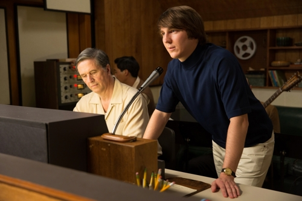
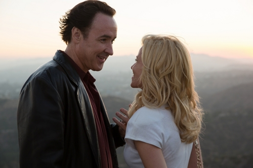

Love and Mercy Bill Pohlad

The reverberating medley of melodies at the onset of Bill Pohlad's biopic 'based on the life of Brian Wilson' (head songwriting genius for The Beach Boys) so eloquently forecasts its structure, as the film uniquely distills the most spiritually and physically dynamic parts of the reclusive musician's life for the screen. Love and Mercy, attributed to Brian's typically bright and big-hearted 1988 single, resonates not because it aims for complete documentation of his creative peak, mental break, bedridden years, and subsequent round-the-clock surveillance; it's because the achronological structure almost continually focuses, visually and aurally, on his music's artistic and emotional integrity while also serving to re-envision the innovative composer with more conventional plot points. Many of these details seem to manifest organically in the see-sawing between the mid-1960s and the mid-1980s and between convincing portrayals of Brian in each decade - a spiritedly stocky Paul Dano in the former and a delicately subdued John Cusack in the latter - channeling a singular energy but each imparting their own distinctively soft-spoken honesty. Together their committed interpretations of the genuine introvert's trials and tribulations get at his motives as a musician and outpouring warmth lurking just beneath his unassuming exterior.

Love and Mercy provides its most poignant glimpse into Brian's creative process in its very first vignette, successfully externalizing his inner monologue over several bars of Surf's Up at the piano, which is soon mirrored by an early solo performance of the beloved God Only Knows that is, today, frequently cited as one of the most infectious and recognizable pop gems ever written. Self-doubt permeates the consciousness of both these scenes, the latter with the looming shadow of his father Murray (Bill Camp)'s criticism of the song as "wishy-washy." In his early twenties, Brian concentrates this personal discontentment and the inability to please his family/bandmates as well as his competitive desire to best The Beatles' Rubber Soul into an eccentric but forward-thinking approach in various California recording studios during the Pet Sounds sessions in 1965-1966. Whether manipulating piano chords with bobby pins, recording his own dogs Banana and Louie barking as an intended coda to the album, and utilizing multiple bass lines in different keys, Brian's progressive musical sensibility, heavily inspired by record producer Phil Spector and male vocal ensemble The Four Freshmen, soon becomes swallowed in this pursuit of unattainable perfectionism that hinders the timely realization of Good Vibrations before he loses the entirety of psychedelic masterpiece SMiLE to indecision.
Pohlard colors in the emotional rhythms of this fruitful era through transitions from certain states of mind or desires of the principal Beach Boy, linking them with certain visual cues or gestures; most notable is a piece of reverse escapism after his father's sudden intrusion during recording of the wistfully tender ballad Caroline, No. Love and Mercy cuts from a close-up of Brian cupping his headphoned ears as a flurry of voices invades the soundtrack to a mirrored likeness of his expression poolside, lost in thought before his mystical LSD trip. At its best, the film lures its audiences into this dreamlike rhythm that synchronizes with the songwriter's soulfully experimental approach to composition. In one of the immediately preceding scenes during group vocal tracking for You Still Believe in Me, Brian stands alone, overseeing his studio domain with outstretched arms. Atticus Ross' floating rearrangement of Brian's vocal harmonies encircles him like an invisible halo, just one more instance of the film externalizing his inner melodic voice - literally, in this case - as a way of sharing and ultimately relaying his experience as an artist. It's just unfortunate that these highs, complemented by sporadic montages of the Beach Boys' earliest days as media darlings, are broken by the restrained nature of his later life under sycophantic doctor and legal guardian Eugene Landy (a cartoonish Paul Giamatti).

The final sixth of the film burrows a little too heavily into the redemptive narrative involving Brian's model/saleswoman girlfriend Melinda Ledbetter (Elizabeth Banks), who he meets in a Cadillac dealership while attempting to skirt away from the oppressive watch of Eugene. This is primarily padding to Brian's musical output and unfulfilled private life, and writers Michael Alan Lerner and Oren Moverman fortunately comprehend the degree to which music defines Brian Wilson's self-expression, including a scene where he sits at his beachfront property's piano to spontaneously dream up a ditty for Melinda. The accumulation of these moments at the piano compose Love and Mercy's greatest thematic visual and aural symmetry, demonstrating the importance of music as therapy outside the (over)prescribed drugs Eugene uses to manipulate an increasingly fragile Brian to quash any of his ambitious impulses. However, even with a great character actor in Giamatti, the part is written with a conscious exaggeration opposite the nuance afford the remainder of the cast. Therefore, Eugene is essentially rendered as nothing more than a typically scheming movie villain, as his smarmy behavior builds towards a most superfluous and sensationalized confrontation with Melinda at the dealership. Melinda's legal recourse to liberate Brian is critical to his reemergence as a solo performer in the late 1980s and at the lyrical center of the titular song; but, perhaps a deeper cinematic vision borrowed from the fire that propelled the musician's early career and the most touching moments of Pohlad's own endeavor would have struck more of a chord.
30 June, 2015 - 06:54 — Grant Phipps